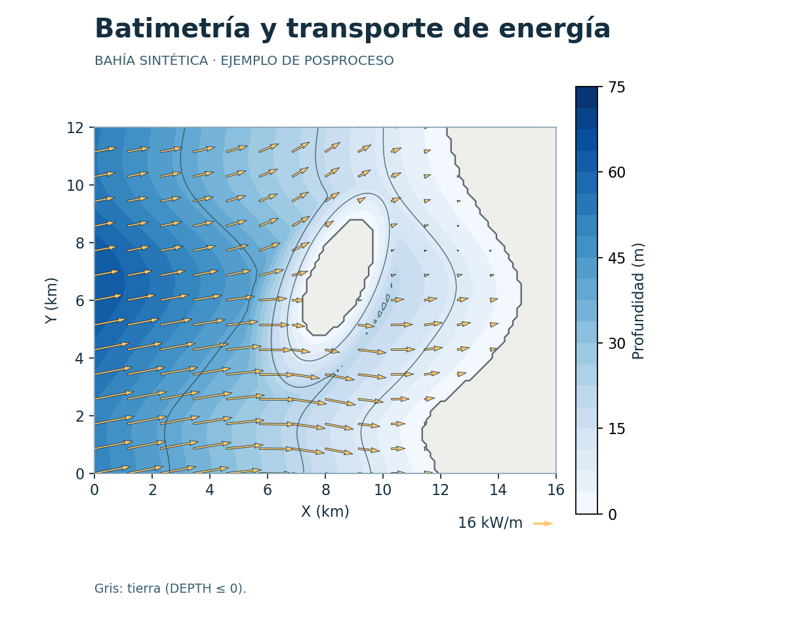
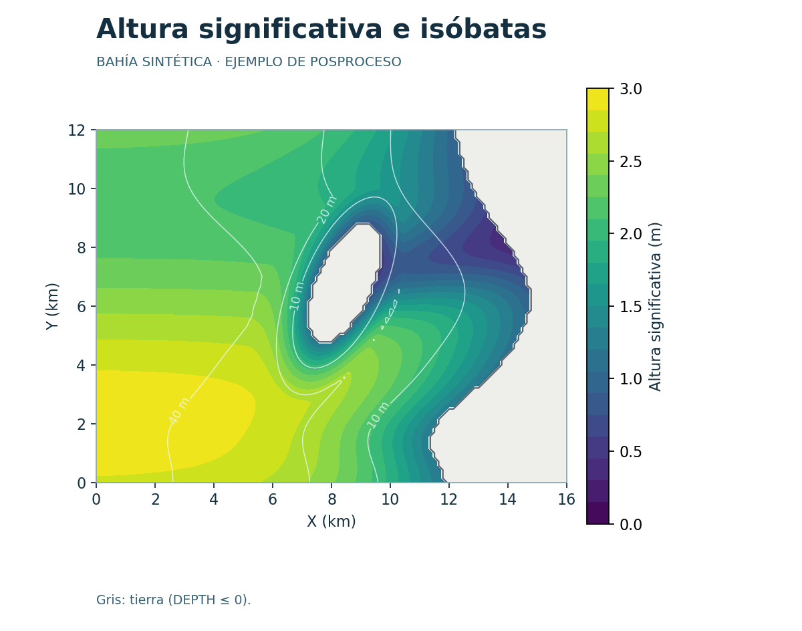

PAQUETE PYTHON LIBRE · V0.1
NefisReader
Lee salidas NEFIS de Delft3D 4 y conviértelas a NetCDF. Incluye la herramienta d3dnefis, una API Python y un servidor MCP opcional.
EJEMPLOS INTERACTIVOS
Explorador WAVE 2D y FLOW 3D.
Elige un campo de oleaje o una capa de velocidad. Los valores se exportaron con NefisReader a partir de los ejemplos sintéticos del repositorio.
Altura significativa
Cargando ejemplo…
Datos sintéticos; no son observaciones ni resultados de la tesis.
El explorador visualiza cortes de ejemplo ya calculados. El paquete instalado lee y convierte tus propias parejas .dat/.def. La página no recibe archivos.
EJEMPLOS DE POSPROCESO
Del NetCDF al mapa.
NefisReader exporta los campos. Un script de Python los combina para dibujar mapas de oleaje. Ambos ejemplos usan la misma bahía sintética: no son simulaciones ni datos del Callao.


Batimetría y flujo de energía
Fondo: DEPTH en metros. Flechas: TRANSP_X y TRANSP_Y en kW/m. Solo se dibujan sobre agua.


Altura significativa e isóbatas
Colores: HSIGN en metros. Líneas: contornos de igual profundidad. El gris identifica tierra en el ejemplo sintético.
INSTALACIÓN
Instala el paquete y lee tus corridas.
Linux x86-64, Python 3.9+ y conexión a internet para instalar dependencias. Descarga el paquete y ejecuta estos comandos desde la carpeta de descargas. No necesitas instalar Delft3D.
tar -xzf NefisReader-main.tar.gz
cd NefisReader-main
python3 -m venv .venv
source .venv/bin/activate
bash scripts/install.sh
d3dnefis examples/data
python examples/leer_mallas.py \
examples/data/NETCDF_EXPORT/wavm-demo-2d.nc \
examples/data/NETCDF_EXPORT/trim-demo-3d.nc¿Ya tienes un archivo?
Pasa un archivo .dat o la carpeta de la corrida a d3dnefis. Con --inventory puedes revisar las variables sin convertir.
Conecta tu agente por MCP
El servidor local inventaría y lee recortes de NEFIS o NetCDF en la carpeta autorizada. Requiere Python 3.10+.
Guía MCP para Codex y otros clientesCRÉDITOS Y ALCANCE
Software libre, con fuentes.
NefisReader es un proyecto independiente. No es un producto oficial de Deltares ni implica su respaldo.
La biblioteca NEFIS corresponde a Deltares. Sus fuentes, avisos y pasos de compilación se distribuyen por separado dentro del repositorio. Los ejemplos son sintéticos; no contienen datos de la tesis.
El código propio está bajo licencia MIT. La biblioteca NEFIS de Deltares conserva sus avisos y licencia propios.
¿Te sirvió NefisReader?
En el repositorio, inicia sesión y pulsa Star para guardarlo y apoyar el proyecto.
Si quieres apoyar el proyecto con una donación voluntaria, ¡contáctame!
El enlace abre una consulta pública en GitHub. No compartas datos de pago.